http://www.fwbuilder.org
| Author: vadim@fwbuilder.org http://www.fwbuilder.org |
This article continues the series of articles on Firewall Builder, a graphical firewall configuration and management tool that supports many Open Source firewall platforms as well as Cisco IOS access lists and Cisco ASA (PIX). Firewall Builder was introduced on this site earlier with articles Getting Started With Firewall Builder, Using Firewall Object In Firewall Builder. Firewall Access Policy Rulesets, Part 1. Firewall Access Policy Rulesets, Part 2.
This article continues with examples of Access Policy rules and demonstrates generated configurations for iptables, PF and Cisco PIX.
More information on Firewall Builder, pre-built binary packages and source code, documentation can be found on the project web site at http://www.fwbuilder.org/. Numerous examples of iptables, pf and other rules are available in Firewall Builder Users Guide. Follow Firewall Builder Project Blog for announcements and articles on all aspects of using Firewall Builder.
Suppose we need to permit SSH access to the firewall. In the simplest case we just create a rule with firewall object (fw) in Destination and a service object SSH in Service. Service object SSH can be found in the Standard objects tree, under Services/TCP. Here is the rule:
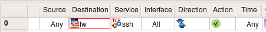This almost trivial rule compiles into configurations using entirely different concepts depending on the chosen target firewall platform. Generated iptables rule is rather simple:
# Rule 0 (global)
#
$IPTABLES -A INPUT -p tcp -m tcp --dport 22 -m state --state NEW -j ACCEPT
Generated PF configuration uses tables to list all ip addresses that belong to the firewall:
table <tbl.r0.d> { 192.0.2.1 , 192.168.1.1 }
# Rule 0 (global)
#
pass in quick inet proto tcp from any to <tbl.r0.d> port 22 keep state
Iptables has concept of chains that separate different packet flow paths inside netfilter engine and packets headed for the firewall itself are always processed in the INPUT chain. This means generated iptables script could be optimized. If comparison is done in the INPUT chain, the script does not have to verify destination address to make sure it belongs to the firewall since this has already been done by the kernel. PF does not have mechanism like this, therefore generated PF configuration must compare destination address of the packet with all addresses of the firewall. This can be done in a more elegant way using PF tables, but still, we make the firewall compare destination address of the packet against a list of addresses.
Ipfw offers a shortcut for this, it is called configuration option "me". Here is how generated ipfw script looks like for the same simple rule controlling ssh access to the firewall:
# Rule 0 (global)
#
"$IPFW" add 10 set 1 permit tcp from any to me 22 in setup keep-state || exit 1
"me" here means any address that belongs to the firewall.
The rule #0 in the screenshot above matches service ssh which has special meaning in case of PIX. There, control to the firewall for protocols such as ssh and telnet is configured using special configuration commands "ssh" and "telnet" instead of generic access lists. Here is what we get when we compile exactly the same rule for PIX:
! Rule 0 (global)
!
ssh 0.0.0.0 0.0.0.0 outside
ssh 0.0.0.0 0.0.0.0 dmz50
ssh 0.0.0.0 0.0.0.0 inside
The rule in this example leaves source address "any", which is why generated PIX commands match "0.0.0.0 0.0.0.0". Fwbuilder generated "ssh" command for all interfaces of the PIX for the same reason.
Obviously this rule makes our firewall too open because it permits SSH connections to it from any host on the Internet. It would be a good idea to restrict it so that it permitted connections only from the internal LAN. This is easy, we just put object "LAN" in the source of the corresponding rule:
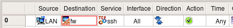Generated configuration for all supported firewall platforms will follow the same pattern but add matching of the source address of the packet to make sure it comes from local LAN. In case of PIX, there is only one "ssh" command attached to the internal interface because the program determined that network object used in "Source" of the rule matches only this interface of the firewall:
! Rule 0 (global)
!
ssh 192.168.1.0 255.255.255.0 inside
This is better, but we should be careful not to permit more protocols to the firewall than we really intend to. Let's look at the simple rule permitting connects from internal LAN to the Internet (rule #0 on the screenshot below):
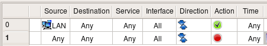
Logic says that destination "any" should match any address,
including the ones that belong to the firewall itself. In
Firewall Builder this can actually be changed using a checkbox
in the
We are now using negation in the destination; the meaning of this rule is "permit connections on any protocols from machines on the network 'LAN' to any host except the firewall". We still need a rule described above to permit ssh to the firewall, but the rule permitting access from LAN to anywhere does not open additional access to the firewall anymore. I am going to demonstrate generated iptables and pf configurations for rules with negation like this later.
But is there any way to make it even more restrictive? Of course there is. It is always a good idea to restrict access to the firewall to just one machine and use that machine to compile the policy and manage the firewall. Let's call this machine a management station "fw-mgmt". Here is more restrictive combination of rules that permits ssh access to the firewall only from fw-mgmt, permits access from LAN to anywhere except the firewall on any protocol and blocks everything else. This combination of rules works the same regardless of the setting of the option "Assume firewall is part of any".
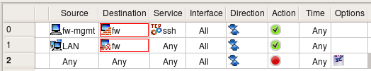Three rules shown above are very good at restricting access to the firewall from all sources except for the dedicated management workstation. The problem with them is that the firewall policy is never this simple and short. As you add more rules, you can add a rule with a side effect of permitting access to the firewall sooner or later. This is one of the reason many administrators prefer to keep option "Assume firewall is part of any" turned off. In any case, it may be a good idea to build rules for the access to the firewall explicitly and group them together. It would look like something like this:
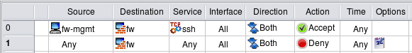I do not include generated iptables, pf, pix code because it should be clear by now how should it look like. It is more important that rules in Firewall Builder GUI look exactly the same regardless of the chosen target firewall platform.
Policy rules demonstrated in these examples are good at restricting access to the firewall while making it possible to manage it remotely via ssh. The problem with these rules is that administrator has to be careful to not break them in any way. One would think it should be hard to make an error in a policy fragment consisting of two rules, but this happens. These two rules are just a small part of a much larger rule set and may not be located in a prominent place right on top of it. As new rules are added to the policy, at some point some rule located above may block access to the whole network or range of addresses that accidentally includes management address of the firewall. This means even though the rules are there, the access to the firewall gets blocked as soon as updated policy is uploaded and activated. This is really bad news if the firewall machine is located far away in a remote office or data center.
To help avoid this bad (but all too familiar) situation, Firewall Builder offers yet another feature. To access it, select firewall object in the tree and open it in the editor, then click "Firewall Settings" button. This was described in more details in Using Firewall Object In Firewall Builder on this site. In the dialog that appears, locate controls shown below:
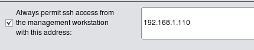Enter single IP as shown on the screenshot or subnet definition in the input field and hit "OK", then recompile the policy. Here is what gets added on the top of the generated iptables script:
$IPTABLES -A INPUT -m state --state ESTABLISHED,RELATED -j ACCEPT
$IPTABLES -A OUTPUT -m state --state ESTABLISHED,RELATED -j ACCEPT
$IPTABLES -A FORWARD -m state --state ESTABLISHED,RELATED -j ACCEPT
# backup ssh access
#
$IPTABLES -A INPUT -p tcp -m tcp -s 192.168.1.110/255.255.255.255 \
--dport 22 -m state --state NEW,ESTABLISHED -j ACCEPT
$IPTABLES -A OUTPUT -p tcp -m tcp -d 192.168.1.110/255.255.255.255 \
--sport 22 -m state --state ESTABLISHED,RELATED -j ACCEPT
I included rules matching "ESTABLISHED,RELATED" states in the screenshot to demonstrate that automatic rule for ssh access is added right after them. In other words, the ssh access rule is added at the very beginning of the script before any other rule. There are actually two rules, one to permit inbound packets in chain INPUT, it matches protocol tcp, destination port 22 and states "NEW,ESTABLISHED". The other rule permits outbound packets in chain OUTPUT, also protocol tcp, source port 22 and states "ESTABLISHED,RELATED". The purpose of this complexity is to make sure not only newly established ssh sessions are permitted, but also "old" ones, established before iptables rules are purged and reinstalled during firewall configuration reload. This helps ensure ssh session used to activate updated firewall policy does not get blocked and stall in the middle of the policy update process.
The same option is provided in the "Firewall settings" dialog for all supported firewall platforms. Firewall Builder always generates command to permit ssh to the firewall and makes it the very first in the access control rule set.
Now all administrator needs to do is enter ip address of the management workstation or address block it belongs to in the "Firewall Settings" dialog, then recompile and update generated policy on the firewall. There is no need to remember to add special rule to permit ssh to the firewall in the policy ruleset since this rule is now generated automatically. Generated rule is always on top of all other rules, so any mistake in the policy rule set will never block ssh access to the firewall. This is a good way to reduce the risk of locking yourself out of your own firewall. Using this feature is highly recommended.
Firewall Builder can be used to generate a policy for the firewall running on the server. Here is an example that shows how to set up a policy to permit access to different ports on the server. First of all, we need to create a Firewall object to represent our server. The only difference between this case and a usual case where firewall protects one or more networks behind it is that for the server-firewall we only need to create one interface besides the loopback. The following screenshot demonstrates a policy that permits access to the web server running on this machine (both HTTP and HTTPS), as well as FTP and management access via SSH. Rule #1 allows the server to use DNS for name resolution. Service object used in the "Service" column in rule #1 is in fact a group that consists of TCP and UDP service objects that represent tcp and UDP variants of the protocol (both use the same destination port 53).
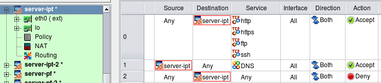In this example I turned option "Assume firewall is part of any" off to simplify generated script. Here is the iptables script created for these rules:
# Rule 0 (global)
#
$IPTABLES -A INPUT -p tcp -m tcp -m multiport --dports 80,443,21,22 \
-m state --state NEW -j ACCEPT
#
# Rule 1 (global)
#
$IPTABLES -A OUTPUT -p tcp -m tcp --dport 53 -m state --state NEW -j ACCEPT
$IPTABLES -A OUTPUT -p udp -m udp --dport 53 -m state --state NEW -j ACCEPT
#
# Rule 2 (global)
#
$IPTABLES -N RULE_2
$IPTABLES -A INPUT -j RULE_2
$IPTABLES -A RULE_2 -j LOG --log-level info --log-prefix "RULE 2 -- DENY "
$IPTABLES -A RULE_2 -j DROP
Firewall Builder optimized generated rule and used module multiport to put all four TCP ports used in rule #0 in one iptables command. The program always uses module multiport to make generated script more compact, even if you use a mix of TCP, UDP and ICMP services in the same rule. Since iptables does not support using a mix of protocols in the same command, the program generates several iptables commands, one for each protocol, but still can use module multiport in each command if there are several ports to match.
Rule #1 was split because it matches both tcp and udp protocols. Because of that, in the generated iptables script we have one command for tcp and another for udp.
Note how iptables commands generated for rule #0 went into chain INPUT, whereas commands generated for rule #1 went into chain OUTPUT. Rule #0 controls access to the server (object "server" is in "Destination" in the rule) but rule #1 controls connections initiated by the server (object "server" is in "Source" of the rule). Firewall Builder picks the right chain automatically.
Generated PF script uses tables to match four tcp ports in the same rule:
# Rule 0 (global)
#
pass in quick inet proto tcp from any to 192.168.1.10 \
port { 80, 443, 21, 22 } keep state
#
# Rule 1 (global)
#
pass out quick inet proto tcp from 192.168.1.10 to any port 53 keep state
pass out quick inet proto udp from 192.168.1.10 to any port 53 keep state
#
# Rule 2 (global)
#
block in log quick inet from any to 192.168.1.10
Sometimes the web server is bound to a several IP addresses on the same machine. One typical situation when this is needed is when the web server supports multiple sites using HTTPS protocol. The following firewall configuration demonstrates the case when interface eth0 has two IP addresses (192.0.2.1 and 192.0.2.2):
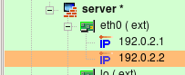Suppose the web server should accept HTTPS connections to both IP addresses, while HTTP and FTP are allowed only on address 192.0.2.1. The management access to the server is allowed only via protocol SSH and only from the management workstation "fw-mgmt". The following rules enforce this policy:
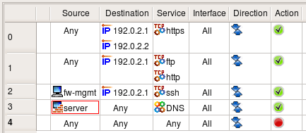The same rules could be used to permit or deny access to different ports on a server located on the network behind a dedicated firewall.
Here is how generated iptables script looks like:
# Rule 0 (global)
#
$IPTABLES -A INPUT -p tcp -m tcp -d 192.0.2.1 --dport 443 -m state --state NEW \
-j ACCEPT
$IPTABLES -A INPUT -p tcp -m tcp -d 192.0.2.2 --dport 443 -m state --state NEW \
-j ACCEPT
#
# Rule 1 (global)
#
$IPTABLES -A INPUT -p tcp -m tcp -m multiport -d 192.0.2.1 --dports 80,21 \
-m state --state NEW -j ACCEPT
#
# Rule 2 (global)
#
$IPTABLES -A INPUT -p tcp -m tcp -s 192.0.2.100 -d 192.0.2.1 --dport 22 \
-m state --state NEW -j ACCEPT
#
These iptables commands should be quite obvious. PF rules in this example also look very familiar:
# Tables: (1)
table <tbl.r0.d> { 192.0.2.1 , 192.0.2.2 }
# Rule 0 (global)
#
#
pass quick inet proto tcp from any to <tbl.r0.d> port 443 keep state
#
# Rule 1 (global)
#
#
pass quick inet proto tcp from any to 192.0.2.1 port { 80, 21 } keep state
#
# Rule 2 (global)
#
#
pass quick inet proto tcp from 192.0.2.100 to 192.0.2.1 port 22 keep state
Many services running on the firewall machine need to be able to establish connections to the same machine. X11, RPC, DNS are services like that, to name a few. Blocking these services on the firewall can cause various problems, depending on what protocol is being blocked. If it is DNS, then it may take a lot longer than usual to get to a command line prompt when logging in to the machine using telnet or ssh. Once logged in, you won't be able to resolve any host names into addresses. If X11 is blocked, then X server and any graphic environment using it (KDE, Gnome etc.) won't start. In any case though the problem can easily be solved by adding a simple any-any rule and specifying the loopback interface of the firewall to permit all sorts of communications. As shown on the screenshot below, this rule must specify the loopback interface, have action Accept and direction Both.
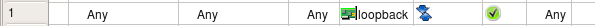Running X11 and other complex services on the dedicated firewall machine should be discouraged. However, you may want to run a firewall to protect a server, workstation, or laptop where X11, RPC and other services are perfectly normal.
Generated iptables commands are placed in INPUT and OUTPUT chains because packets sent by the firewall to itself never hit FORWARD chain. Options "-i lo" and "-o lo" nail interface and direction:
$IPTABLES -A INPUT -i lo -m state --state NEW -j ACCEPT
$IPTABLES -A OUTPUT -o lo -m state --state NEW -j ACCEPT
For PF, we can specify interface to match but keep direction open so both "in" and "out" will match:
pass quick on lo inet from any to any keep state
Suppose we want to block connections to certain ports on the server behind the firewall, but want to do it in a "polite" manner that lets the sender host know right away that the connection attempt was blocked so our server would look like nothing is listening on that port at all. One of the practical applications of this setup would be blocking Ident connections to a mail relay or a mail server. Sendmail and many other MTA's (Mail Transport Agents) attempt to connect to Ident port (TCP port 113) on the mail relay every time they accept email from that relay. Many believe Ident protocol is practically useless and does not really serve as a protection against SPAM or for any other useful purpose. Unfortunately silent blocking of ident connections on the firewall using a rule with action "Deny" adds a delay in the email delivery. This happens because when sender host tries to establish Ident connection to the recipient, it sends TCP SYN packet to it (the first packet in three-way TCP handshake) and then waits for TCP ACK packet in response. However, it never sees it because recipient's firewall blocked its first TCP SYN packet. In situations like this, the sender host assumes the reply packet got lost and tries to send TCP SYN packet again. It repeats this for a few seconds (usually 30 sec) before it gives up. This adds 30 sec delay to email delivery. Our intent is to show how one can construct a policy rule to block Ident without causing this delay.
The simplest way to block any protocol is to use "Deny" action in the policy rule. Since "Deny" causes firewall to silently drop the packet, sender never knows what happened to it and keeps waiting for response. To avoid this delay we will set rule Action to "Reject". Normally "Reject" makes firewall to send ICMP "unreachable" message back to sender, thus indicating that access to requested port is denied by the firewall. This may be insufficient in some cases because the host trying to connect to our Ident port won't understand this type of ICMP message and will keep trying. In fact, most OS do not recognize ICMP "administratively prohibited" message and do keep trying. To make host on the other side stop its attempts right away we need to send TCP RST packet back instead of ICMP message. This can be done by setting the appropriate parameter for the "Reject" action. To set an Action parameter, change the Action to "Reject," then double-click the Reject icon to get the parameters dialog. (see screenshot below). It is also safe to turn stateful inspection off on this rule since we do not want connection to be established and therefore do not need to keep track of it.
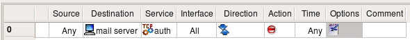 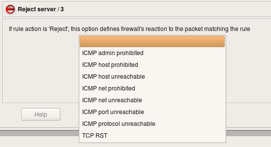Supported firewall platforms use different syntax for rules that should drop packets and send icmp or tcp rst back. Here is what Firewall Builder generates for the rule shown above for iptables:
# Rule 0 (global)
#
$IPTABLES -A FORWARD -p tcp -m tcp -d 192.168.1.100 --dport 113 \
-j REJECT --reject-with tcp-reset
For PF it uses "return-rst" option:
# Rule 0 (global)
#
block return-rst quick inet proto tcp from any to 192.168.1.100 port 113
There is no equivalent configuration option for PIX
Suppose we want to set up a rule to permit access from the host on DMZ net "mail_relay_1" to hosts on the Internet, but do not want to open access from it to machines on our internal network represented by the object "internal-network". Since we want it to connect to hosts on the Internet and cannot predict their addresses, we have to use "any" as a destination in the policy rule. Unfortunately "any" includes our internal net as well, which is going to open undesired hole in the firewall.
There are two solutions to this problem. First, we can use two rules: first will deny access from "mail_relay_1" to "internal_net" and the second will permit access from "mail_relay_1" to "any". Since rules are consulted in the order they are specified in the policy, access to internal net will be blocked by the first rule since the packet would hit it first. These two rules are represented below:
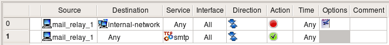Here are the generated iptables rules:
# Rule 0 (global)
#
$IPTABLES -A FORWARD -p tcp -m tcp -s 192.168.2.22 -d 192.168.1.0/24 \
--dport 25 -j DROP
#
# Rule 1 (global)
#
$IPTABLES -A FORWARD -p tcp -m tcp -s 192.168.2.22 --dport 25 \
-m state --state NEW -j ACCEPT
Another solution uses negation. We can specify destination in the rule as "not internal_net", thus permitting access to anything but "internal_net". Negation can be enabled and disabled in the pop-up menu which you call by clicking right mouse button on the corresponding rule field. This rule depends on the rules below it to block access from "mail_relay1" to the "internal_net". If the policy was built using general principle of blocking everything and then enabling only types of connections that must be permitted, then it usually has a "catch-all" rule at the bottom that blocks everything. This last rule is going to deny connections from the "mail_relay1" to "internal_net".
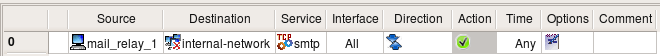Firewall Builder can use the "!" option to generate compact iptables command for this rule:
# Rule 0 (global)
#
$IPTABLES -A FORWARD -p tcp -m tcp -s 192.168.2.22 -d ! 192.168.1.0/24 \
--dport 25 -m state --state NEW -j ACCEPT
Negation can be used in NAT rules in a similar way.
Firewall Builder can use similar "!" option for PF as well, but there is no negation in the PIX ACL syntax.
Things get more complicated if we have several networks inside and want to build a rule to permit connects from a server on DMZ to everywhere except for the three internal networks:
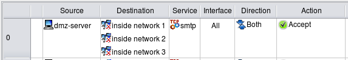Simple "!" negation in the generated iptables command won't work, so the program generates the following more complicated script:
# Rule 0 (global)
#
$IPTABLES -N Cid168173X9037.0
$IPTABLES -A FORWARD -p tcp -m tcp -s 192.168.2.22 --dport 25 \
-m state --state NEW -j Cid168173X9037.0
$IPTABLES -A Cid168173X9037.0 -d 192.168.1.0/24 -j RETURN
$IPTABLES -A Cid168173X9037.0 -d 192.168.10.0/24 -j RETURN
$IPTABLES -A Cid168173X9037.0 -d 192.168.20.0/24 -j RETURN
$IPTABLES -A Cid168173X9037.0 -j ACCEPT
The first rule checks protocol, port number and source address and if they match, passes control to the user-defined chain where destination address is compared with addresses of the three networks we want to protect. If either one of them matches, iptables target "RETURN" terminates analysis in the temporary chain and returns control. Note that in this case the firewall does not make any decision what to do with the packet. The rule above specifies action for the packets that do not head for the internal networks but does not say anything about those that do. Some other rules in the policy should decide what to do with them. This is why generated iptables script uses target "RETURN" instead of "DROP" or "ACCEPT" to simply return from the temporary chain and continue analysis of the packet further.
For PF, Firewall Builder uses combination of "!" option and a table:
table <tbl.r0.d> { 192.168.1.0/24 , 192.168.10.0/24 , 192.168.20.0/24 }
# Rule 0 (global)
#
pass quick inet proto tcp from 192.168.2.22 to ! <tbl.r0.d> port 25 keep state
Tagging packets can be very useful facility that allows you to match a packet at one point in the rule set but act on it later on. This can be combined with rule branching for even more flexibility. Packet tagging is only supported in Firewall Builder for the firewall platforms that can do it, these are iptables and pf. Tagging sometimes can also be used to interact with packet processing not intended to enforce security policy, such as traffic shaping or QoS. Packet tags assigned by iptables can later be used for traffic shaping with Linux utility "tc".
In Firewall Builder tagging of packets is done using special service object type. First, you create an object of this type and configure tag number or a string. Once this is done, you can use this object to match tagged packets by just dropping the object to the "Service" column of a policy rule. To assign tag to a packet you choose action "Mark" (iptables) or "Tag" (PF) and drop the same Tag service object to a well in the action options dialog. Lets use an example given in the "A Practical Guide to Linux Traffic Control" to illustrate this. They show how packets can be tagged using iptables target "MARK" so that they can be placed in the right queue for traffic shaping later on. The iptables rule we will create looks like this:
iptables -t mangle -A POSTROUTING -o eth2 -p tcp --sport 80 -j MARK --set-mark 1
Note how the rule should be placed in the table "mangle", chain "POSTROUTING". This is how target MARK works, administrator just has to know that if they write iptables rules by hand.
We start with a Tag Service object configured with tag "1":
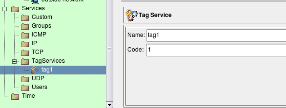We also need tcp service object to match source port 80:
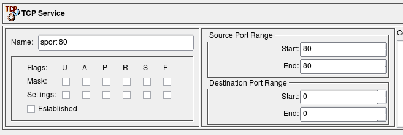And now the rule:
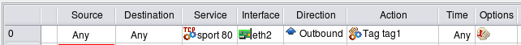In order to replicate the rule from the Guide, I leave Source and Destination "any", put outside interface of the firewall in "Interface" column, set direction to "Outbound", set action to "Tag" and make it stateless. The following screenshots demonstrate how this is done:
Configuring Tag action
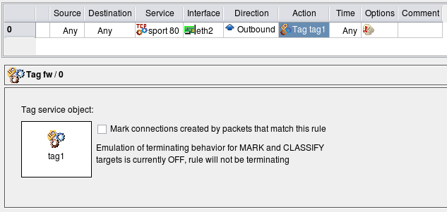Configuring rule options to make the rule stateless
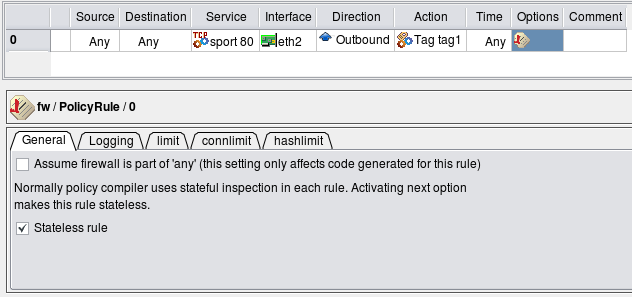This configuration makes fwbuilder generate iptables command that is exactly the same as the one given in "A Practical Guide to Linux Traffic Control".
The rule reproduced from the Guide is stateless and matches and tags every reply HTTP packet crossing the firewall. This is not very efficient in case the firewall has to forward heavy HTTP traffic because it has to work on every single packet. To make things more efficient, iptables can mark whole sessions which means individual packets can be marked automatically as long as they belong to the session that was marked once. To use this feature with Firewall Builder, turn on checkbox "Mark connections created by packets that match this rule" in the dialog where you configure options for the rule action and where the well into which you had to drop Tag Service object is located. This checkbox modifies generated iptables script by adding a call to CONNMARK iptables target that marks whole connection and also by adding the following rule on top of the script:
# ================ Table 'mangle', automatic rules
$IPTABLES -t mangle -A PREROUTING -j CONNMARK --restore-mark
This rule automatically restores mark on the packets that belong to the marked session.
We will continue with examples of IPv6 policy access rules in the next article.
References: